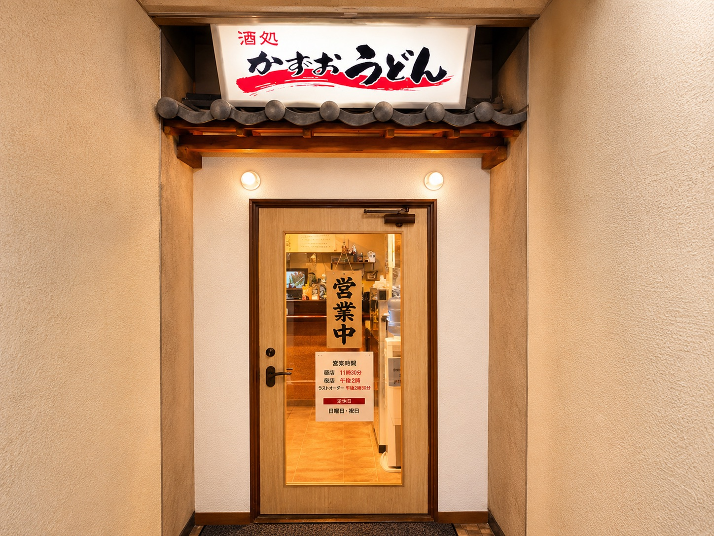
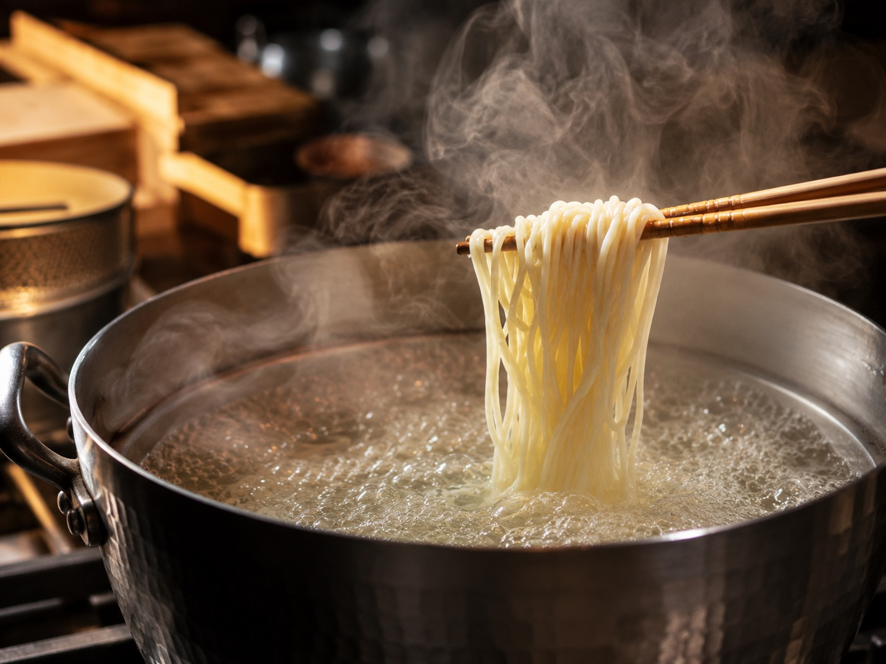
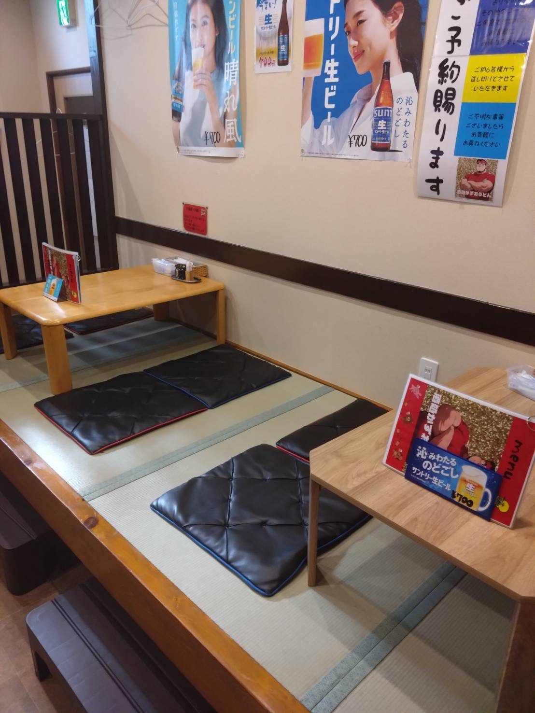
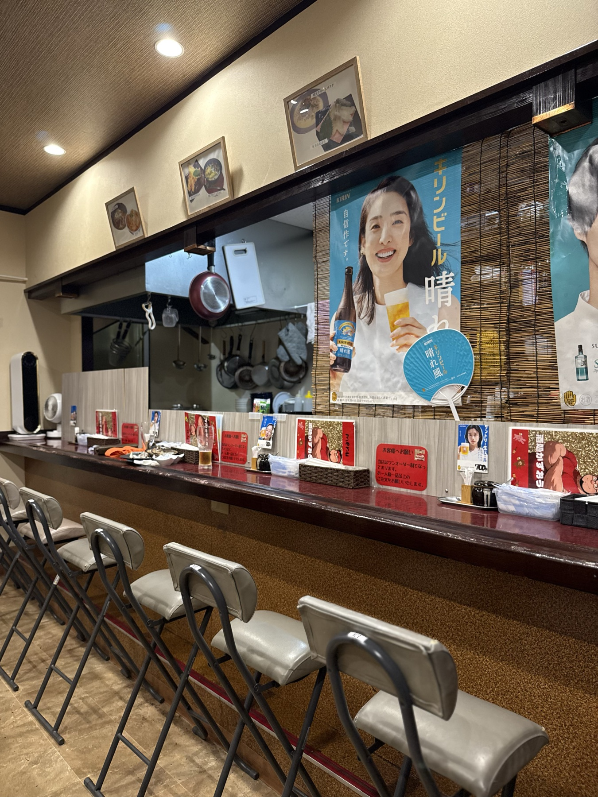
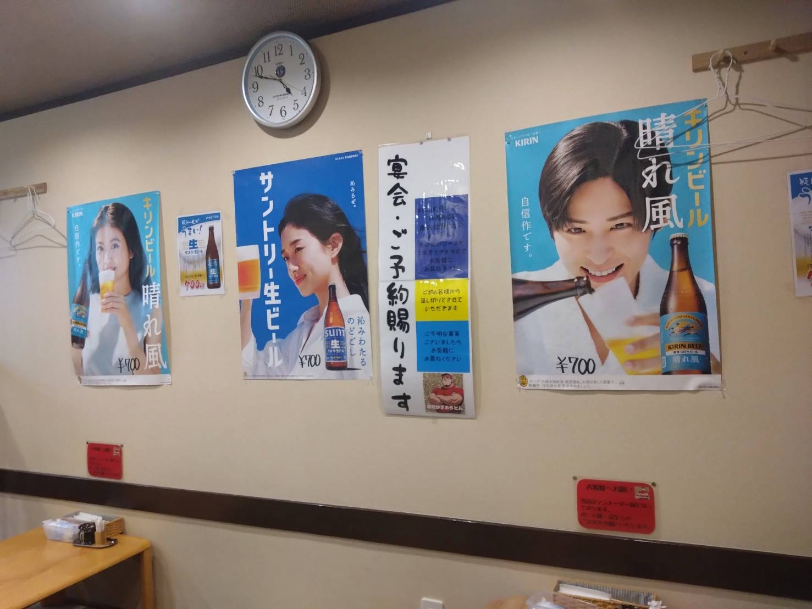
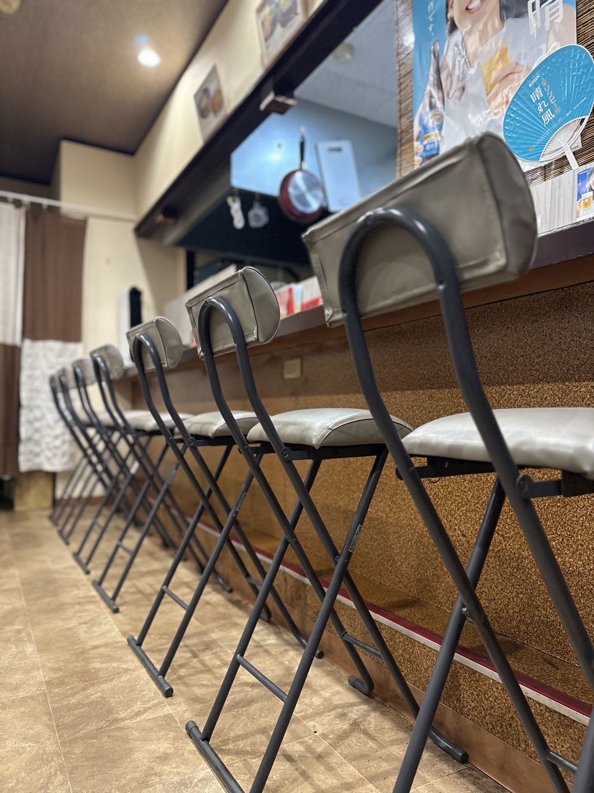
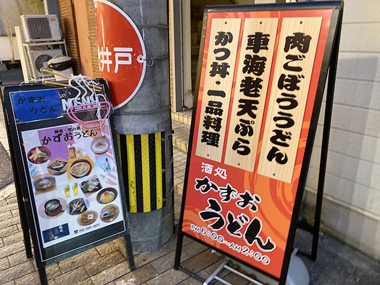

十六歳から味ひとすじ
Dashi
自家製の出汁
数種類のかつお節をブレンドして毎日店で引く自家製スープ
澄んだ一番出汁の香りが最後のひと口まで続きます

熊本県八代市本町
一軒目の乾杯から飲んだあとの一杯まで
夕方6時から深夜2時まで営業
Drink, Eat & Finish
居酒屋として楽しむ夜も締めの一杯を目当てに立ち寄る夜も
酒の肴とうどんのどちらにも手を抜かない店です
職人歴十数年の技を一杯に
16歳で飲食の道に入った店主 牛田和男がうどん職人として十数年磨いた技で一杯ずつ仕上げます
飲んだ後でもするりと入るあっさりとした味付けが身上です
十六歳から味ひとすじ
Dashi
数種類のかつお節をブレンドして毎日店で引く自家製スープ
澄んだ一番出汁の香りが最後のひと口まで続きます

Men
出汁をまとってするりと喉を通る細麺ともちもちで食べ応えのある太麺
注文を受けてから釜で茹で上げるできたての一杯です
宴会・貸切のご案内
気の合う仲間と手作り料理やお酒をゆっくりお楽しみください
コース料金 5,000円〜
店内のご案内
気軽に立ち寄れるカウンター席と靴を脱いでくつろげるお座敷席をご用意しています




| 店名 | 酒処 かずおうどん |
|---|---|
| 住所 | 〒866-0861 熊本県八代市本町1-3-30 |
| 電話 | 090-2089-8822 |
| 営業時間 | 18:00〜翌2:00 |
| 定休日 | 日曜日・祝日 |
| アクセス | JR八代駅から車で約5分（本町アーケード内） |
| ご利用案内 | ワンオーダー制 お一人様一品以上のご注文をお願いいたします |
| 予約 | 電話にて受付 |
